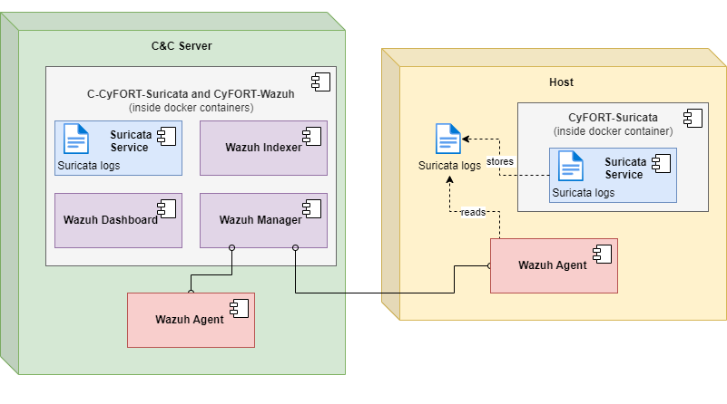
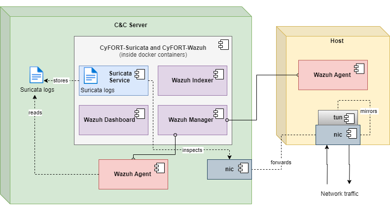
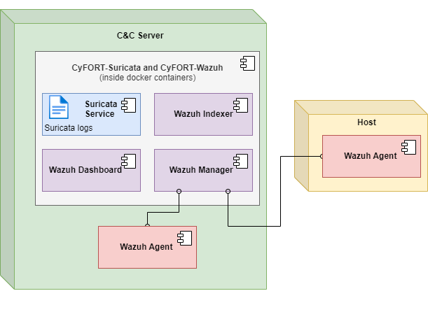
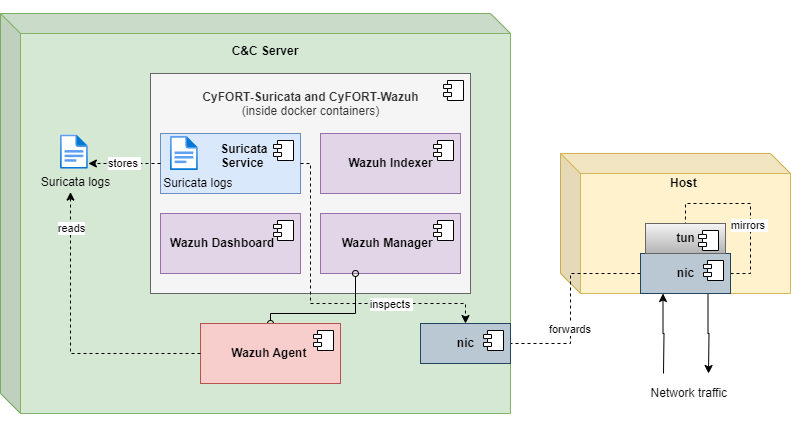
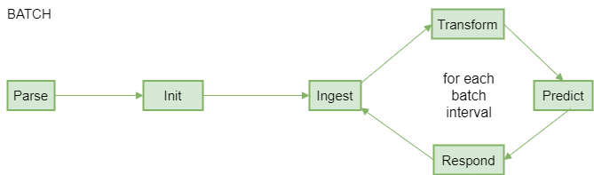
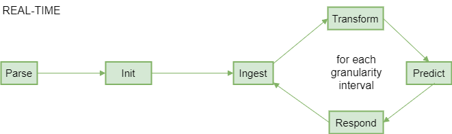
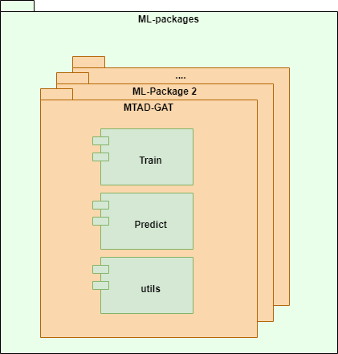
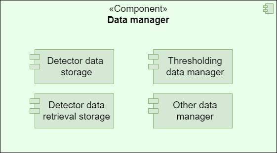

1.0 Training pipeline flow LARC-001
Training pipeline flow diagram
The diagram summarizes the flow of the training pipeline orchestrated by the ADBox Engine.

Parent links: SRS-038
Child links: SWD-001 Training pipeline
2.0 Historical data prediction pipeline flow LARC-002
Prediction pipeline flow diagram for historical data mode
The diagram summarizes the flow of the predict pipeline for historical data orchestrated by the ADBox Engine.
Parent links: SRS-035
Child links: SWD-002 Prediction pipeline
3.0 Preprocessing flow LARC-003
Preprocessing flow diagram of ADBox data transformer
The diagram summarizes the flow of the method Preprocessor.preprocessing by the ADBox Data Transformer.

Parent links: SRS-029
Child links: SWD-010 ADBox data transformer, SWD-011 ADBox preprocessing
4.0 IDPS-ESCAPE end-point integrated arch. LARC-004
IDPS-ESCAPE end-point integrated architecture diagram
The diagram illustrates the architecture of IDPS-ESCAPE end-point integrated model.

Parent links: SRS-033
5.0 IDPS-ESCAPE end-point hybrid arch. LARC-005
IDPS-ESCAPE end-point hybrid model architecture diagram
The diagram illustrates the architecture of IDPS-ESCAPE end-point hybrid model.

Parent links: SRS-033
6.0 IDPS-ESCAPE end-point host-only IDS arch. LARC-006
IDPS-ESCAPE end-point host-only IDS model architecture diagram
The diagram illustrates the architecture of IDPS-ESCAPE end-point HIDS only model.

Parent links: SRS-033
7.0 IDPS-ESCAPE end-point capture-only arch. LARC-007
IDPS-ESCAPE end-point capture-only model architecture diagram
The diagram illustrates the architecture of IDPS-ESCAPE end-point capture only model.

Parent links: SRS-033
8.0 Batch and real-time prediction flow LARC-008
Batch and real-time ADBox modes prediction flow diagrams
The diagram summarizes the flow of the predict pipeline with - batch mode - real-time mode orchestrated by the ADBox Engine.
 
Parent links: SRS-027
Child links: SWD-002 Prediction pipeline
9.0 ADBox machine learning package LARC-009
ADBox machine learning package diagram
ADBox ML-packages folder containing the machine learning packages called by the AD pipelines.

Parent links: SRS-039
Child links: SWD-003 MTAD GAT training, SWD-004 MTAD GAT prediction, SWD-005 Peak-over-threshold, SWD-006 Predictor score computation, SWD-007 ADBox MTAD GAT anomaly prediction, SWD-008 ADBox MTAD GAT Predictor
10 ADBox data manager LARC-010
ADBox data manager diagram
The diagram below depicts the ADBox Data Manager.

Parent links: SRS-040
Child links: SWD-009 ADBox data managers